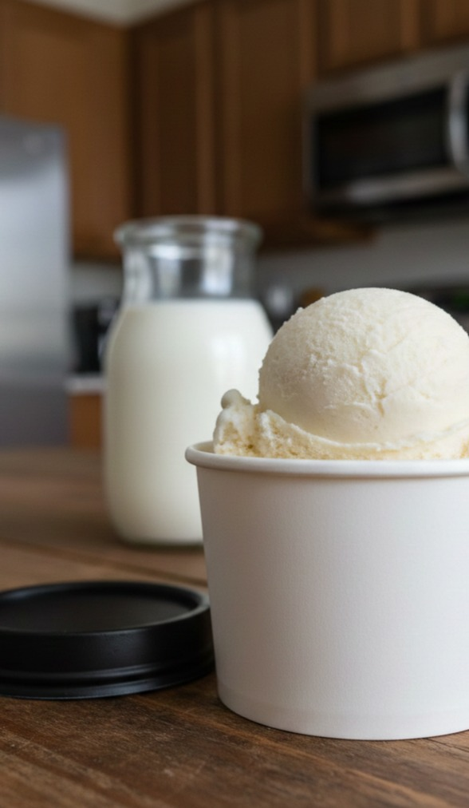

Selamat datang di website BIOTEKNOLOGI PANGAN.
Es krim probiotik merupakan inovasi produk pangan yang menggabungkan teknologi fermentasi dengan pembuatan es krim sehingga menghasilkan makanan yang lezat dan juga bermanfaat bagi kesehatan. Es krim ini membutuhkan waktu fermentasi selama 2 hari, disambung dengan proses pembekuan dan pengadukan yang membutuhkan waktu 1 hari. Es krim ini dapat meningkatkan kesehatan pencernaan dengan penggunaan bakteri baik.
Melalui website ini, pengunjung diharapkan dapat mengetahui lebih luas terkait bioteknologi, terutama produk es krim probiotik, serta manfaat bakteri baik bagi tubuh. Semoga website ini dapat menambah wawasan dan meningkatkan minat belajar tentang bioteknologi kedepannya.
Bioteknologi adalah cabang ilmu yang melibatkan makhluk hidup untuk menghasilkan produk yang bermanfaat bagi manusia. Dalam bidang pangan, bioteknologi sering digunakan dalam proses fermentasi dengan bantuan mikroorganisme seperti bakteri atau jamur.
Fermentasi merupakan salah satu teknik bioteknoogi konvensional yang memberi produk rasa, aroma, tekstur, dan nilai gizi yang baru dan lebih baik. Bioteknologi konvensional dalam perihal tersebut merupakan bioteknologi yang dilakukan secara alami tanpa modifikasi genetik suatu produk, lain halnya dengan bioteknologi modern yang menggunakan rekayasa genetika (manipulasi materi genetik).
Salah satu contoh hasil bioteknologi pangan adalah es krim probiotik. Es krim probiotik dibuat dengan penambahan bakteri baik (probiotik) ke dalam bahan es krim. Bakteri probiotik berfungsi untuk membantu menjaga kesehatan sistem pencernaan dan menyeimbangkan mikroorganisme di dalam usus. Dalam percobaan ini, saya menggunakan starter dengan bakteri Lactobacillus bulgaricus dan Streptococcus thermophilus.
Proses pembuatan es krim probiotik melibatkan teknik bioteknologi sederhana, yaitu pasteurisasi (pemanasan susu dibawah 100 derajat Celsius) kemudian fermentasi susu menggunakan starter bakteri asam laktat. Setelah proses fermentasi, bahan diolah menjadi es krim dengan dibekukan dan diaduk sehingga hasil akhirnya bertekstur lembut, rasanya asam, dan memiliki nilai gizi yang lebih baik dibandingkan es krim biasa.
Dengan adanya inovasi es krim probiotik, bioteknologi tidak hanya menghasilkan makanan yang enak, tetapi juga memberikan manfaat kesehatan bagi manusia.
